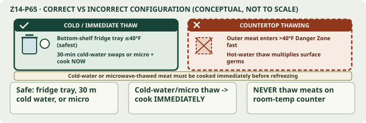

Z14-P65 · Food production and preservation · New manuscript
Thaw frozen foods safely in the refrigerator, cold water, or microwave—never on the counter
Keep outer surfaces of thawing meats and meals out of the 40°F–140°F bacterial Danger Zone.
When it applies · Everyday and emergency meal prep from household freezers.
Equipment · Refrigerator ≤40°F with bottom drip tray, leak-proof bag + cold tap water, or microwave defrost setting.

Actions
- Thaw frozen meats, poultry, seafood, and prepared meals using ONLY one of three USDA-validated safe methods: 1) Refrigerator thawing (slow, safest—place on a rimmed tray on the bottom shelf at ≤40°F), 2) Cold-water thawing (sealed leak-proof bag submerged in cold tap water changed every 30 minutes, cooking immediately once thawed), or 3) Microwave thawing (cooking immediately afterward).[F12, P12, F03]
- NEVER thaw frozen meats, poultry, or cooked casseroles on the kitchen counter, in hot water, or in a warm sunny garage—the outer surface rapidly warms past 40°F into the bacterial Danger Zone hours before the icy center melts.[F12, F03]
- Remember that freezing pauses bacteria without killing them; foods thawed in the refrigerator may be safely refrozen (with slight quality loss), whereas foods thawed in cold water or a microwave MUST be fully cooked first before any refreezing.[F12, P12]
Failure recognition · Setting a frozen five-pound roast on the kitchen counter at 7 a.m. to thaw all day until dinner at 6 p.m.[P12, F03]
Verify · Confirm refrigerator bottom-tray thaw, 30-minute cold-water swaps + immediate cook, or microwave + immediate cook—zero counter thawing.[F12, F03]
Stop or change course · Perishable meat or meal left thawing at room temperature longer than 2 hours (1 hour >90°F) must be discarded cleanly.[F03, F12]
Evidence and editorial notes
- F03 · USDA / FDA / CDC · Four Steps to Food Safety (current web edition)
- Section: Chill > Refrigerate promptly · Conditions: Perishable food outside temperature control
Support: Refrigerate within two hours, or within one hour above 90°F.
Limitations: Ambient temperature spikes shorten safe holding windows. · Conflicting evidence: None; retained for food safety pack completeness.
Editorial note: Maintains five-pack integrity. · Specialist reviewer: Food safety and public health
Primary source · checked 2026-11-24 - F12 · USDA FSIS · The Big Thaw: Safe Defrosting Methods (Last updated 2013-06-15 (Internet Archive capture 2026-11-03; live page refused automated access))
- Section: Refrigerator, cold water and microwave thawing; counter thawing · Conditions: Thawing frozen perishable food
Support: Thaw in the refrigerator, in cold tap water in a leak-proof bag with the water changed every 30 minutes, or in the microwave. Cook food thawed in cold water or a microwave immediately and before refreezing; food thawed in the refrigerator can be refrozen without cooking, with some loss of quality. Never thaw perishables on the counter or in hot water: the outer layer can sit between 40 and 140 degrees F while the centre is still frozen, and perishables must not stay at room temperature more than 2 hours.
Limitations: Live page refused automated access; read from the 2026-11-03 Internet Archive capture. · Conflicting evidence: None.
Editorial note: Added in W2C-B06. · Specialist reviewer: Food safety specialist
Primary source · checked 2026-11-28
Current assessment · W2C-E043 (2026-11-28) · Bounded primary support recorded: Three safe methods; 30-minute water changes; cook before refreezing after cold-water or microwave thawing; refrigerator-thawed food may be refrozen; outer layer 40 to 140 F on the counter while the centre is frozen; two-hour room-temperature limit. Limits: Rimmed tray and bottom shelf are editorial placement details. - P12 · NCHFP · Freezing Foods Safely (current web edition)
- Section: Freezing Foods > Blanching, Packaging, 0°F Storage, and Thawing · Conditions: Household freezers maintaining 0°F (-18°C) or lower
Support: Blanch most vegetables per tested times to inactivate quality-degrading enzymes, chill promptly, package in moisture-vapor-resistant freezer wrap/containers leaving liquid expansion headspace, freeze at 0°F or below, and thaw safely in the refrigerator (never on the counter).
Limitations: Freezing halts microbial growth but does not kill all pathogens; thawed foods require prompt safe cooking/handling. · Conflicting evidence: None; connects freezing quality control with Z15 outage loss decisions.
Editorial note: Core freezing and safe thawing evidence in Z14. · Specialist reviewer: Food safety and Extension preservation
Primary source · checked 2026-11-24
Source lineage · NCHFP and USDA FoodSafety.gov; new manuscript · Classification · New manuscript.